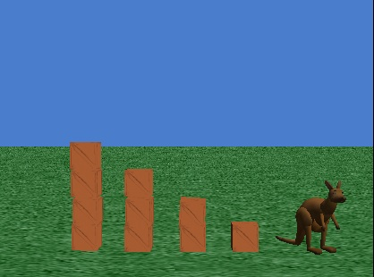

Laboratory Exercise 10
CMP 108: Programming for Non-majors
Lehman College-- CUNY
20 April 2007
Simple Control Structures, Classes, & Functions
Today's lab focuses on using simple control structures, such as loops
and decisions, as well as introduces classes and functions. We
will be
using the Alice programming environment (http://www.alice.org).
Design requirements: We will be using one of the
built-in tutorials and the galleries (available on-line or loaded in
from the CD).
Simple Control Structures
As with NQC for the robots, Alice has several standard control
structures that can be used in programs. These include loops and
decisions. The first program for this week will be to make your
kangaroo hop up repeatedly, until he reaches the top of a stack of
boxes. Begin with your program from last lab (Chapter 3, Exercise
3) and add to the scene a stack of 2 boxes, a stack of three boxes, and
a stack of 4 boxes:

If the boxes are positions equal distances apart, your kangaroo can
leap from the one box to the stack of two boxes using the same
instructions as you used to get your kangaroo from the ground to the
one box. With that in mind, add a loop that repeats the hopping 4
times. Note: for this part of the lab, the amount of
programming is very little (if you did the kangaroo program last lab),
but it might take a bit to get the stack of boxes in the correct
positions.
World-level Methods
Chapter 4 begins by discussing methods that act on the entire
world. Do Chapter 4, Exercise 3 (Gallop and Jump) that creates
methods to make a horse (and rider) gallop and jump over a fence.
This is similar to the hopping kangaroo, with the addition of putting
the code into separate methods. Note that making the horse a
vehicle for the rider will simplify the programming immensely (see p
40).
Parameters
Our last program for today focuses on parameters to methods,
illustrated by the method that has band members perform solos.
The program is to modify the BeetleBand to play duets. See
Chapter 4, Exercise 5. To save time, you might want to start from
the world discussed in lecture.
Finishing up for the Day
To get credit for this laboratory, you need to show and explain your
programs to Prof. St. John, as well as demonstrate that they run using
your robot.
We must be out of the computer laboratory by 12:30pm. As such, if
you
are not ready to demonstrate your work by 12:15pm, you can do so in the
next laboratory. Before leaving the room, make sure that all
computers
and monitors are turned off, that any paper and trash have been
removed, and that all chairs are returned
to their proper places. Also, make sure you pack up your IR tower
in
your shoe box, since they're difficult to replace.